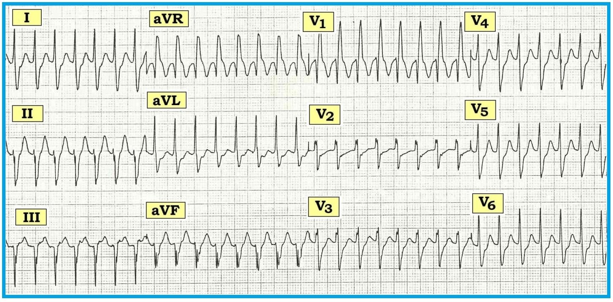

ECG Blog #38 — Đây có phải là dẫn truyền lệch hướng kiểu RBBB?
Bệnh nhân của bạn là nam, 40 tuổi, đến khoa cấp cứu vì hồi hộp đánh trống ngực, với điện tâm đồ 12 chuyển đạo như trong Hình 1. Không có điện tâm đồ cũ để so sánh. Trước đây bệnh nhân khoẻ mạnh. Bệnh nhân tỉnh táo và huyết động ổn định với HA = 160/80 mmHg.
- Đây là nhịp gì?
- Nhịp nhanh này có nhiều khả năng là nhịp nhanh trên thất kèm dẫn truyền lệch hướng kiểu RBBB (RBBB aberration) không?
- Bạn sẽ điều trị bệnh nhân này như thế nào?


DIỄN GIẢI:
Nhịp trong Hình 1 nhanh và đều, tần số ~200/phút. Phức bộ QRS đơn dạng (không thay đổi hình dạng) — và — có vẻ hơi rộng (dù không quá rộng) — thời gian ước tính trong khoảng 0,11-0,12 giây. Không thấy sóng P. Như vậy, nhịp này đủ tiêu chuẩn là một nhịp nhanh QRS rộng đơn dạng đều (Wide-Complex Tachycardia) không có dấu hiệu rõ ràng của hoạt động nhĩ. Như chúng tôi đã nhấn mạnh ở các bài blog trước (Xem ECG Blog #23 — Blog #24 — Blog #35) — chẩn đoán VT (nhịp nhanh thất — Ventricular Tachycardia) phải được đặt ra trước tiên cho đến khi chứng minh được điều ngược lại.
- VT là nguyên nhân thường gặp nhất, vượt xa các nguyên nhân khác, của một WCT đơn dạng đều khi không có dấu hiệu hoạt động nhĩ (chiếm >80% tổng số trường hợp — và trên 90% nếu bệnh nhân lớn tuổi và có tiền sử bệnh tim đã được xác định).
- Đôi khi (~5-20% số trường hợp) – một WCT đều có thể có căn nguyên trên thất, do một trong hai: i) BBB có sẵn từ trước (blốc nhánh); hoặc ii) dẫn truyền lệch hướng.
WCT: Phân biệt VT với SVT
Phân biệt VT với SVT (nhịp nhanh trên thất — SupraVentricular Tachycardia) kèm hoặc BBB có sẵn từ trước hoặc dẫn truyền lệch hướng thường là một việc rất khó (Xem ECG Blog #15 và Blog #33 và đặc biệt là tệp pdf này trong ACLS-2013-ePub). Trong nhiều trường hợp tại giường bệnh — không thể phân biệt một cách chắc chắn. Ở những trường hợp khác — chỉ có thể xác định trên lâm sàng hồi cứu, khi đã có các bản ghi trước đó và sau chuyển nhịp. Đôi khi — sẽ không thể xác định dứt khoát trừ khi (và cho đến khi) làm thăm dò điện sinh lý …
- Về lâm sàng — tầm quan trọng của việc phân biệt VT với SVT kèm BBB có sẵn hoặc dẫn truyền lệch hướng nằm ở tác động của việc xác định này lên tiên lượng và cách tiếp cận điều trị. VT là một rối loạn nhịp có khả năng đe doạ tính mạng. Ngược lại — SVT hiếm khi đe doạ tính mạng, và thường có thể kiểm soát bằng thuốc mà không nhất thiết phải chuyển khám tim mạch.
- NẾU còn nghi ngờ — luôn coi một WCT đều là VT cho đến khi chứng minh được điều ngược lại. Về mặt thống kê (như đã nhấn mạnh trước đó) — phần lớn trường hợp đúng là như vậy.
- NẾU bệnh nhân đang trong WCT đều mà không ổn định (hoặc trở nên không ổn định vào bất kỳ lúc nào) — ưu tiên điều trị rất rõ ràng: sốc điện chuyển nhịp cho bệnh nhân ngay lập tức!
- NẾU ngược lại, bệnh nhân dung nạp được nhịp này và ổn định về huyết động — thì (theo định nghĩa) vẫn còn ít nhất một chút thời gian để cân nhắc chẩn đoán xác định hơn cho nhịp WCT trước khi bắt đầu điều trị. Nên nhớ rằng ngay cả bệnh nhân đang trong VT kéo dài (sustained VT) đôi khi vẫn tỉnh táo và huyết động ổn định trong những khoảng thời gian dài (không chỉ hàng giờ mà cả hàng ngày!). Vì vậy, chừng nào bệnh nhân WCT vẫn còn ổn định về huyết động — có thể tiến hành một trong các hướng: i) đánh giá chẩn đoán thêm (với hy vọng tăng mức độ chắc chắn tương đối về căn nguyên của nhịp WCT); — ii) bắt đầu điều trị nội khoa (có thể gồm nghiệm pháp cường phế vị, adenosine và/hoặc các thuốc chống loạn nhịp khác); — hoặc iii) sốc điện chuyển nhịp đồng bộ (ngay khi việc cắt cơn WCT trở nên cần thiết, không được trì hoãn thêm).
Đánh giá thêm tại giường đối với nhịp WCT đều:
Chúng tôi bàn về các khía cạnh điều trị liên quan đến xử trí cấp bệnh nhân WCT ổn định ở chỗ khác (Xem Mục 08.9 trong tệp pdf này của ACLS-2013-ePub). Dưới đây chúng tôi chỉ giới hạn ở những nhận xét liên quan đến việc đánh giá chẩn đoán nhịp trong Hình 1.
- Ghi điện tâm đồ 12 chuyển đạo trong lúc đang nhịp nhanh là một thành phần thiết yếu của cách tiếp cận chẩn đoán. Cần đủ 12 chuyển đạo để xác nhận độ rộng QRS (phòng khi một phần QRS nằm trên đường đẳng điện ở một số chuyển đạo nhưng không nằm ở các chuyển đạo khác) — để đánh giá đầy đủ hoạt động nhĩ trong cơn nhịp nhanh — và để đánh giá các manh mối hình dạng có thể gợi ý mạnh căn nguyên của nhịp WCT.
- Có được các bản ghi bổ sung của bệnh nhân có thể là vô giá. Đó có thể là các điện tâm đồ 12 chuyển đạo trước đây khi bệnh nhân còn nhịp xoang (để xem trước đây có BBB với hình dạng tương tự hay không) — hoặc các dải nhịp trước đây hay hiện tại, hoặc các bản ghi sau chuyển nhịp có thể dùng để so sánh cũng như để phát hiện các cơn WCT trước đó.
- Xác định nhịp WCT là đều (như trong Hình 1) giúp thu hẹp đáng kể chẩn đoán phân biệt (Xem ECG Blog #36 về đánh giá & xử trí các nhịp WCT không đều).
- Xác định phức bộ QRS ở 12 chuyển đạo trong Hình 1 không quá rộng (không quá 0,11-0,12 giây) làm tăng khả năng nhịp WCT đều này có nguồn gốc trên thất (dù xác suất vẫn nghiêng rõ rệt về VT hơn nhiều).
- Tuổi bệnh nhân tương đối trẻ — tình trạng khoẻ mạnh trước đó — và ổn định huyết động — tất cả đều góp phần làm tăng khả năng SVT (dù một lần nữa, xét tổng thể xác suất vẫn nghiêng rõ về VT).
- Các manh mối hình dạng QRS phù hợp với căn nguyên trên thất có thể có (Xem bên dưới).
Đánh giá hình dạng QRS:
Mô tả đầy đủ việc đánh giá hình dạng QRS trong cơn nhịp nhanh vượt quá phạm vi của bài ECG blog này. Tuy vậy — nhớ được một số ít tiêu chuẩn dễ nhớ có thể giúp ích rất nhiều trong việc xác lập xác suất VT so với khả năng căn nguyên trên thất. Những manh mối dễ nhớ này gồm:
- Có trục lệch cực độ/kỳ dị trong cơn WCT ủng hộ mạnh VT. Mặc dù trong Hình 1 có LAD rõ (trục lệch trái — Left Axis Deviation) — trục và hình dạng này không vượt ra ngoài giới hạn có thể gặp với LAHB (blốc phân nhánh trái trước — Left Anterior HemiBlock), vì vẫn còn một sóng r khởi đầu (dù rất nhỏ) ở chuyển đạo II và aVF — và QRS đẳng điện ở chuyển đạo I. Vì vậy — mức độ LAD thấy trong Hình 1 không giúp ích cho chẩn đoán phân biệt nhịp này.
- Có QRS âm hoàn toàn (hoặc gần như hoàn toàn) ở chuyển đạo V6 ủng hộ VT. Rõ ràng trong Hình 1 không phải như vậy, vì thấy sóng R tương đối cao ở V6.
- Có sóng R một pha ở chuyển đạo aVR gần như chẩn đoán VT (TLTK 1) — vì điều này hàm ý WCT khởi phát từ mỏm tim, nghĩa là rối loạn nhịp phải xuất phát từ tâm thất. Dạng QR ở chuyển đạo aVR trong Hình 1 không có giá trị chẩn đoán.
- Có đáy (nadir) muộn >0,10 giây (với bất kỳ phức bộ RS nào ở bất kỳ chuyển đạo trước tim nào, đo từ khởi đầu sóng R đến điểm sâu nhất của sóng S) gần như chẩn đoán VT (TLTK 2). Trong Hình 1 thấy phức bộ RS ở các chuyển đạo V2-đến-V6 — nhưng không chuyển đạo nào có đáy muộn. Dù điều này rõ ràng không chứng minh là SVT — nó có làm cho SVT trở nên hợp lý hơn.
- Cuối cùng — hình dạng QRS phù hợp với dạng của một rối loạn dẫn truyền điển hình. Dẫn truyền lệch hướng thường biểu hiện một dạng rối loạn dẫn truyền nào đó, vì cơ chế của nó dựa trên sự kéo dài thời kỳ trơ ở một hoặc nhiều phân nhánh dẫn truyền. Thường gặp nhất — dẫn truyền lệch hướng có hình dạng RBBB (blốc nhánh phải — Right-Bundle-Branch-Block) (vì ở đa số người, nhánh phải có xu hướng có thời kỳ trơ dài nhất) — nhưng bất kỳ dạng rối loạn dẫn truyền nào cũng có thể gặp (gồm cả dạng RBBB, LBBB hoặc blốc phân nhánh). Hình dạng QRS trong Hình 1 phù hợp với dạng blốc hai phân nhánh (RBBB/LAHB) — dù việc không chắc có sóng r khởi đầu nhỏ của dạng RBBB ở chuyển đạo V1 hay không thì hơi không điển hình.
ĐIỀU CỐT LÕI: Chúng ta vẫn chưa chắc chắn về chẩn đoán của WCT đơn dạng đều trong Hình 1 — có thể là hoặc VT hoặc PSVT với dẫn truyền lệch hướng dạng blốc hai phân nhánh (RBBB/LAHB).
- Điểm quan trọng cần nhấn mạnh là người thầy thuốc sẽ không phải lúc nào cũng biết nhịp WCT là gì vào thời điểm đang khám bệnh nhân. Trong những trường hợp như vậy — phải xử trí theo cách tiếp cận “phỏng đoán tốt nhất” và “nhiều khả năng an toàn & hiệu quả nhất”.
- Về lâm sàng — bệnh nhân trong case này ổn định, nên có thể thử can thiệp điều trị. Việc này có thể gồm áp dụng nghiệm pháp cường phế vị và/hoặc dùng adenosine như một thử nghiệm chẩn đoán/điều trị (Xem Mục 06 trong ACLS-2013-ePub về Sử dụng Adenosine).
- Về chẩn đoán — Chúng tôi nghi ngờ nhịp WCT đều trong Hình 1 là VT phân nhánh (fascicular VT). Trong trường hợp này, nếu nghiệm pháp cường phế vị/adenosine không hiệu quả — có thể thận trọng thử điều trị bằng Verapamil tĩnh mạch.
VT phân nhánh là gì?
VT phân nhánh (còn được coi là một dạng ILVT = nhịp nhanh thất trái vô căn — Idiopathic Left Ventricular Tachycardia) — là một loại VT đặc biệt, trong đó phức bộ QRS tương đối hẹp (so với các VT do thiếu máu cục bộ hoặc do bệnh tim cấu trúc khác) — và có dạng RBBB, thường kèm trục lệch trái. Có 3 loại VT phân nhánh, nhận biết được qua trục QRS trong cơn nhịp nhanh — tuỳ thuộc vào phân nhánh nào tham gia vào vòng vào lại (TLTK 3,4,5):
- Loại thường gặp nhất, vượt xa các loại khác, là VT phân nhánh trái sau (~90-95% số trường hợp) — trong đó điện tâm đồ có dạng RBBB/LAHB (phù hợp với hình ảnh trong Hình 1). QRS tương đối hẹp và có hình dạng RBBB/LAHB là do rối loạn nhịp khởi phát khu trú tại một điểm rất gần phân nhánh trái sau.
- Ít gặp hơn là VT phân nhánh trái trước (dạng RBBB với trục lệch phải) — và hiếm gặp là VT phân nhánh vách trên (dạng RBBB với QRS hẹp và trục bình thường).
- Đặc điểm lâm sàng — VT phân nhánh gặp nhiều nhất ở người trẻ tuổi (chủ yếu là nam) trong độ tuổi từ 15 đến 40. Thường không có bệnh tim cấu trúc nền. Rối loạn nhịp thường khởi phát do gắng sức — và triệu chứng thường gồm hồi hộp đánh trống ngực, chóng mặt, và tiền ngất/ngất. Khác với các dạng VT khác — đột tử hiếm gặp. Tuy nhiên, tái phát thường gặp.
- Những cân nhắc điều trị – VT phân nhánh kéo dài đáp ứng cực kỳ tốt với verapamil tĩnh mạch (kênh calci chậm hướng vào được cho là có vai trò trong cơ chế sinh rối loạn nhịp) — và đây là điều trị được lựa chọn khi nhận ra rối loạn nhịp trong bối cảnh cấp. Có lẽ nó cũng sẽ đáp ứng với diltiazem tĩnh mạch — dù hiệu quả của thuốc chẹn kênh calci đường uống trong phòng ngừa tái phát thì thay đổi. Cả nghiệm pháp cường phế vị lẫn adenosine đôi khi đã được báo cáo là chuyển được nhịp — nhưng đáp ứng không nhất quán. Bệnh nhân nghi ngờ VT phân nhánh nên được chuyển chuyên khoa — vì VT hay tái phát và triệt đốt qua catheter bằng sóng có tần số radio có khả năng chữa khỏi.
ĐIỀU CỐT LÕI: Cần nhấn mạnh rằng các thuốc chẹn kênh calci tác động lên nút AV là verapamil/diltiazem không bao giờ được dùng tuỳ tiện cho bệnh nhân WCT mà VT được xem là một khả năng chẩn đoán quan trọng. Lý do là tác dụng inotrop âm tính và giãn mạch của các thuốc này nhiều khả năng sẽ làm tình trạng xấu đi nếu nhịp hoá ra là một dạng VT do thiếu máu cục bộ hoặc do bệnh tim cấu trúc (có thể dẫn đến nhịp chuyển thành rung thất).
- Hai ngoại lệ cho quy tắc verapamil/diltiazem không hiệu quả với VT là VT đường ra (outflow tract VT) (Xem ECG Blog #35) và VT phân nhánh, như nhiều khả năng là trường hợp này. Cần nhấn mạnh rằng đa số (~90%) các nhịp VT là do bệnh tim cấu trúc và/hoặc thiếu máu cục bộ — trong case này, manh mối lớn nhất cho thấy đây là một trong những dạng VT ít gặp hơn (có thể đáp ứng với adenosine hoặc verapamil) là tuổi bệnh nhân tương đối trẻ và tiền sử bệnh không có gì đáng kể, gợi ý không có bệnh tim nền.
- Tuy vậy — NẾU còn bất kỳ nghi ngờ nào về căn nguyên — không được dùng verapamil/diltiazem cho WCT. Sốc điện chuyển nhịp đồng bộ ngay lập tức hầu như luôn chuyển thành công một nhịp WCT chưa rõ căn nguyên trong bối cảnh cấp — sau đó có thể chuyển chuyên khoa để chẩn đoán xác định và điều trị triệt để.
- Mặc dù nhịp WCT đơn dạng đều trong Hình 1 có các đặc điểm phù hợp với SVT có dẫn truyền lệch hướng — chẩn đoán này không thể đặt ra chỉ dựa vào một bản ghi 12 chuyển đạo duy nhất này. Thay vào đó — phải coi là VT cho đến khi chứng minh được điều ngược lại.
- Mục đích chính của bài blog này là mô tả dạng đặc biệt VT phân nhánh và hình ảnh điện tâm đồ thường gặp nhất của nó (dạng RBBB/LAHB với QRS giãn rộng tối thiểu). Xét toàn bộ các đặc điểm lâm sàng trong case này — đây là chẩn đoán nhiều khả năng nhất cho rối loạn nhịp trong Hình 1. Vì vậy — có thể dùng adenosine, sau đó có lẽ thận trọng tiếp nối bằng verapamil tĩnh mạch. Sốc điện chuyển nhịp đồng bộ được chỉ định ngay khi có dấu hiệu mất bù đầu tiên. Sau điều trị cấp — bệnh nhân nên được chuyển chuyên khoa.
----------------------------------------------------
TÀI LIỆU THAM KHẢO:
- Sasaki K: A New Simple Algorithm for Diagnosing Wide QRS Complex Tachycardia- Comparison with Brugada, Vereckei and aVR Algorithms. Circulation 120:S671, 2009.
- Brugada P, Brugada J, Smeets ML, và cs.: A New Approach to the Differential Diagnosis of a Regular Tachycardia with a Wide QRS Complex. Circulation 83:1649-1659, 1991.
- Johnson Francis, Venugopal K, Khadar SA, và cs.: Idiopathic Fascicular VT. Ind Pacing and Electrophys 4:98-103, 2004.
- Ramprakash B, Jaishankar S, Rao HB, Narasimhan C: Ind Pacing and Electrophys 8:193-201, 2008.
- Srivathsan K, Lester SJ, Appleton CP, và cs.: VT in the Absence of Structural Heart Disease. Ind Pacing and Electrophys 5:106-121, 2005.
----------------------------------------------------
— Các ECG Blog liên quan gồm #15 - #23 - #24 - #33 - #35 - #36 - #85.
----------------------------------------------------